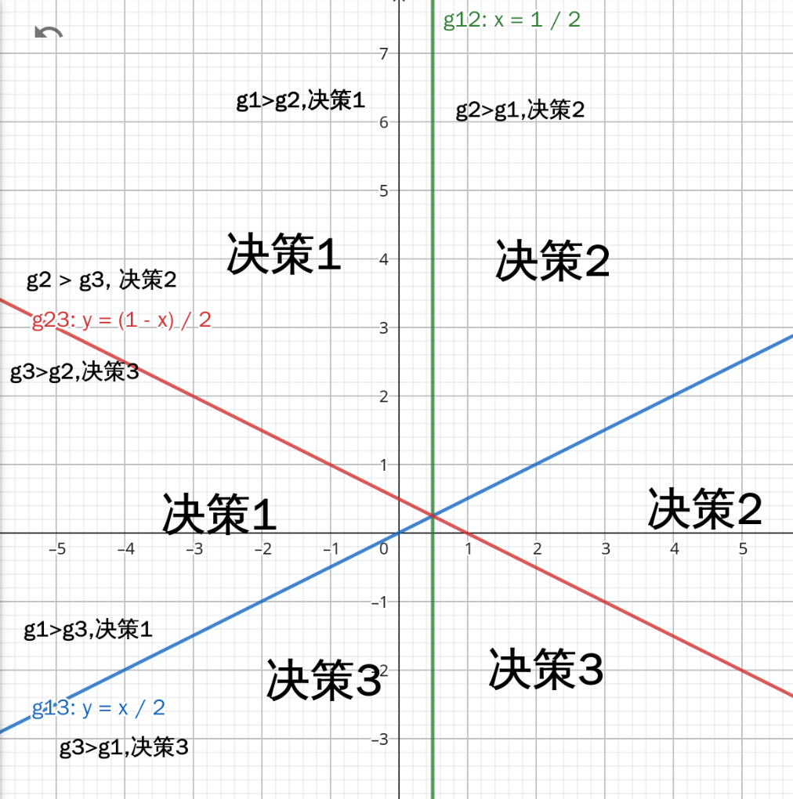

作业三
第一部分计算与证明
题目一
初始权向量为 \(a_0 = (0,1,0)^T\)
先对样本进行规范化增广样本表示：
-
第一类的两个样本 \((1,4,1)^T,(2,3,1)^T\)
-
第二类的两个样本(将y变为-y) \((-4,-1,-1)^T,(-3,-2,-1)^T\)
批处理感知准则函数方法求解 \(\frac{\partial J_p(a)}{\partial a} = - \sum_{y \in Y} y\)
所以更新准则为\(a_{k+1} = a_k - \eta_k \frac{\partial J_p(a)}{\partial a} = a_k + \eta_k \sum_{y \in Y} y\)
第一次迭代
- \((0,1,0) (1,4,1)^T = 4\)，未错分
- \((0,1,0) (2,3,1)^T = 3\)，未错分
- \((0,1,0) (-4,-1,-1)^T = -1\)，错分
- \((0,1,0) (-3,-2,-1)^T = -2\)，错分
\(a_1 = a_0 + (-4,-1,-1)^T + (-3,-2,-1)^T = (-7,-2,-2)^T\)
第二次迭代
- \((-7,-2,-2) (1,4,1)^T = -17\)，错分
- \((-7,-2,-2) (2,3,1)^T = -22\)，错分
- \((-7,-2,-2) (-4,-1,-1)^T = 32\)，未错分
- \((-7,-2,-2) (-3,-2,-1)^T = 27\)，未错分
\(a_2 = a_1 + (1,4,1)^T + (2,3,1)^T = (-4,5,0)^T\)
第三次迭代
- \((-4,5,0) (1,4,1)^T = 16\)，未错分
- \((-4,5,0) (2,3,1)^T = 7\)，未错分
- \((-4,5,0) (-4,-1,-1)^T = 11\)，未错分
- \((-4,5,0) (-3,-2,-1)^T = 2\)，未错分
所有样本均正确分类，此时 \(a = (-4,5,0)^T\)
题目二
\(g_1(x) = -x_1 + x_2\)
\(g_2(x) = x_1 + x_2 - 1\)
\(g_3(x) = -x_2\)
先找到决策边界
\(g_1(x) = g_2(x) \Rightarrow x_1 = \frac{1}{2}\)
\(g_1(x) = g_3(x) \Rightarrow -x_1 + 2x_2 = 0\)
\(g_2(x) = g_3(x) \Rightarrow x_1 + 2x_2 = 1\)
画出决策面

此时不存在分类不确定性区域。
由于这些决策边界是线性的且彼此不重叠，导致在整个特征空间中不存在分类不确定性区域。每个区域都能明确地归类为某个特定的类别，因此分类是确定的。
计算机编程题目
- 编写程序完成 batch perception 算法。 代码为1.cc,数据分别为1.in和2.in
(a) ：
➜ work git:(master) ./1 <1.in
迭代了 23 次
a = (-30.400000,34.100000,34.000000)
(b)：
➜ work git:(master) ✗ ./1 <2.in
迭代了 16 次
a = (-41.400000,48.600000,19.000000)
- 实现Ho-Kashyap algorithm
代码1.py 对于数据一和三
➜ work git:(master) ✗ python3 1.py
No solution found!
分类结果: [[ 0.52222923]
[ 3.38834308]
[-0.44801725]
[ 1.36427013]
[ 2.77598627]
[ 1.45570669]
[ 0.59681974]
[ 1.04217747]
[ 2.35541161]
[ 2.29280706]
[ 0.45101374]
[ 1.39461355]
[-2.15463998]
[ 0.79707832]
[ 2.60742166]
[ 1.18776851]
[ 3.34911696]
[ 3.02200334]
[ 3.18900243]
[-0.60370431]
有三个数据无法分出
对于数据二和四
➜ work git:(master) ✗ python3 1.py
分类结果: [[17.09029092]
[ 0.99999002]
[10.72202397]
[13.94856583]
[12.14310679]
[ 4.7633886 ]
[ 5.02902135]
[ 3.22934322]
[17.92381664]
[ 8.33748952]
[ 3.30007559]
[ 2.34837548]
[ 4.84279234]
[ 5.02668847]
[ 3.96993838]
[ 2.5399945 ]
[ 5.02649878]
[ 8.1175235 ]
[ 9.5187525 ]
[ 7.33488784]
全部可以分类出结果
3.
直接运行2.py 使用测试数据分类成功
➜ work git:(master) ✗ python3 2.py
[0 0 1 1 2 2 3 3]